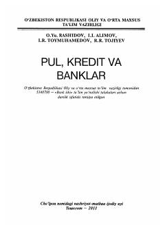

PKPul, kredit va bank tizimining nazariy hamda amaliy asoslariga bag'ishlangan darslik.
Mazkur darslikda pul, kredit va moliya nazariyalari, moliya tizimi, inflatsiya hamda bank tizimining nazariy va amaliy asoslari batafsil yoritilgan. Shuningdek, xalqaro valuta-kredit munosabatlari va sug'urta ishi masalalari ham keng yoritib berilgan. Kitob oliy o'quv yurtlari talabalari, kollej o'quvchilari hamda tijorat banklari xodimlari uchun mo'ljallangan.